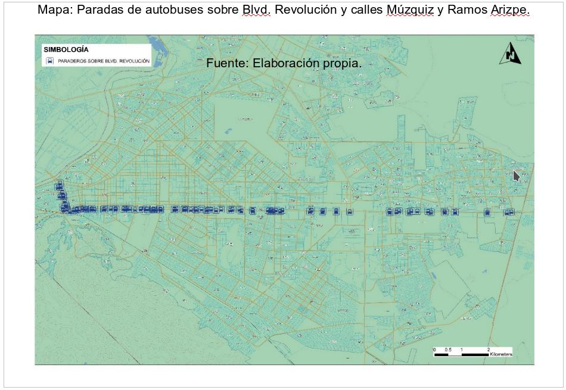
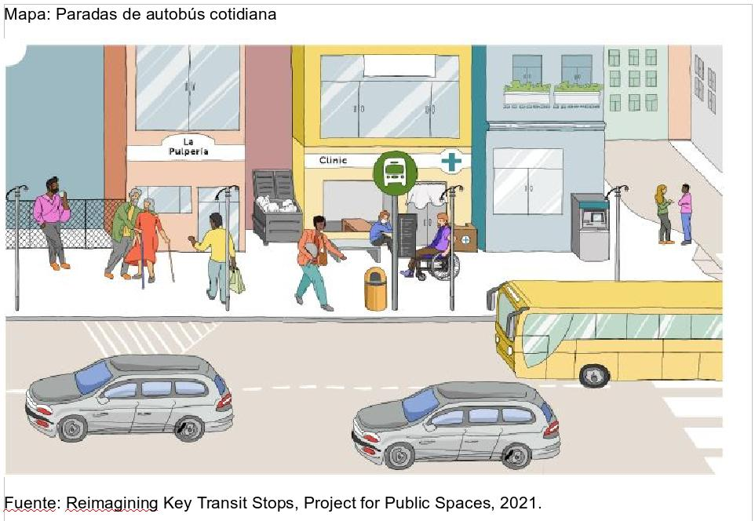
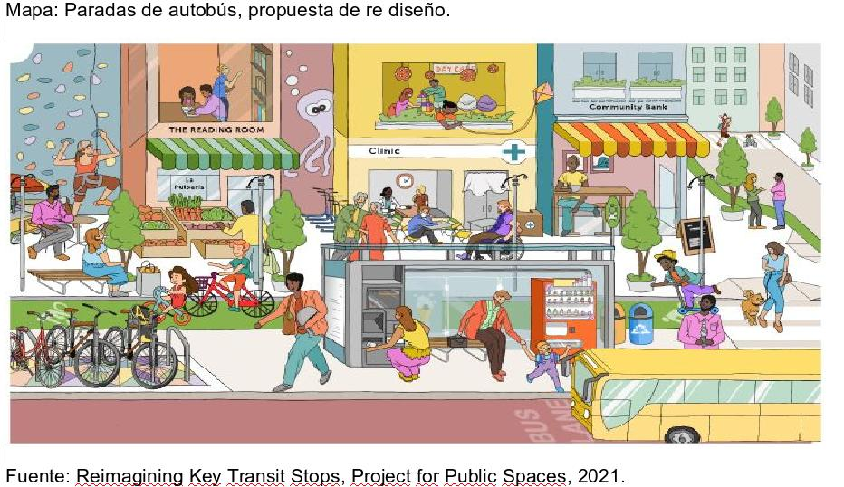
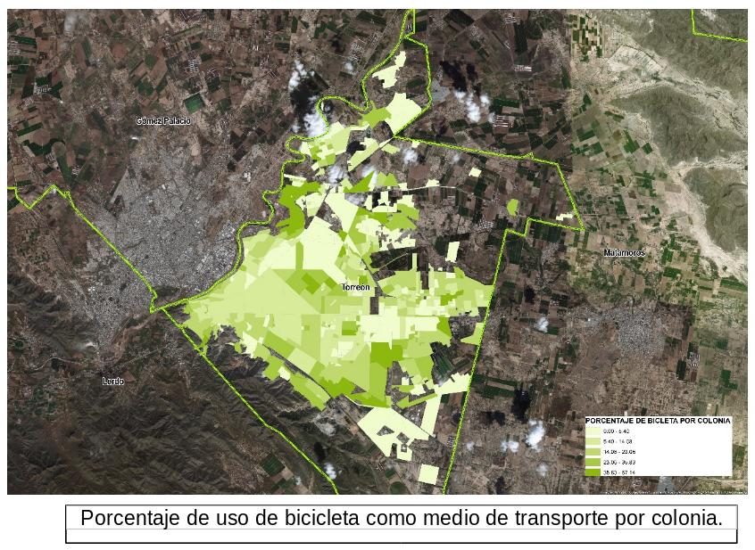
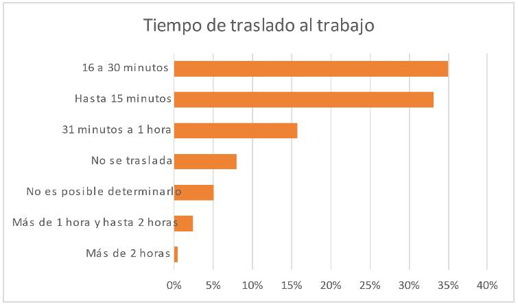
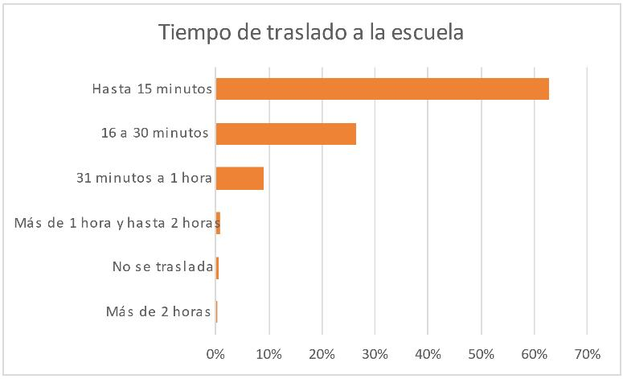

Las estaciones o paradas de autobuses en la ciudad son uno de los lugares que presentan mayor actividad por el tránsito de las personas usuarias del transporte público, con distintos motivos de viaje, ya sea para ir al trabajo, escuela, de compras o de recreación. Sin embargo, éstas no dejan de ser un lugar de paso que cumple la función de ser únicamente un espacio de costumbre que puede o no contar con mobiliario urbano, y que en algunos casos puede representar un punto de vulnerabilidad para las usuarias y usuarios y/o un punto de mala imagen urbana.
En Torreón, existen 28 rutas de transporte público con 54 ramales cuyo recorrido converge en su mayoría en el centro de la ciudad, por lo que a lo largo de su trayecto existen distintas paradas, resaltando aquellas que son más concurridas por su cercanía a algún servicio o zona de interés para las personas.
De acuerdo al Departamento de Planeación de la Dirección General de Vialidad y Movilidad Urbana de Torreón, sobre las vialidades más concurridas por los autobuses de transporte público como el Blvd. Revolución, C. Ramos Arizpe y C. Múzquiz, existen 96 paradas de autobuses identificadas, y 26 de éstas cuentan con mobiliario de parada.
Las paradas para transporte público con mobiliario urbano cumplen con el diseño de brindar un espacio para sentarse y resguardarse del sol mientras se espera el transporte a abordar, sin embargo, no dejan de ser un lugar únicamente de transición.
De acuerdo a los resultados del cuestionario ampliado del Censo de Población y Vivienda 2020, en Torreón el 27.6% de los traslados para llegar al trabajo se hacen en camión, autobús, combi, colectivo, y del mismo modo los traslados a la escuela representan el 21.96% por lo que las paradas para tomar algún transporte público son un espacio de uso cotidiano entre la ciudadanía y deben tomar una mayor importancia como un espacio que puede ofrecer amenidades y comodidad para las personas.

La organización neoyorquina Project For Public Spaces, dedicada a crear y mantener lugares públicos que construyen comunidades, cuenta con una iniciativa llamada “Portals to Places” que tiene un enfoque de creación de espacios alrededor de paradas de transporte público claves y estaciones, aplicando principios y beneficios con ideas de diseño que implementen la comodidad y actividades de una parada o estación transformándolas en un espacio público con vida propia.
Esta iniciativa propone re imaginar el diseño de las paradas que sirven simplemente como lugares de transición de un lugar a otro mientras se espera a abordar y convertirlos en un lugar más usable y con acceso a negocios, servicios y como puntos de encuentro entre la comunidad.
Para entender el concepto de la iniciativa se tienen 5 fundamentos que nos brindan una idea de cómo una parada se convierte en un espacio para la comunidad:
- Ofrece comodidades esenciales, para el confort y seguridad.
- Alientan actividades espontáneas y de rutina conectándolas con puntos clave de destino con recorridos cortos.
- Impulsan el acceso para todas las personas usuarias.
- Incorporan la creación de espacios con una propiedad comunitaria.
- Apoyan el acceso, comodidades, actividades y destinos a través de la programación y gestión.

Algunas de las ideas de comodidad que se proponen dentro de esta iniciativa son:
Señalización informativa
Espacio para descansar
Sombra y resguardo
Estacionamientos que permiten la multimodalidad
Cruceros peatonales seguros
Arte urbano
Vegetación
De las ideas de actividades y destinos ofrece como ejemplos:
Áreas de esparcimiento
Espacio para tomar un descanso
Tienda con venta de alimentos
Bancos o cajeros
Restaurantes y cafés
Cualquier otro destino de esparcimiento, aprovechable y cuyas actividades puedan conectar con la parada de tránsito.
Los 5 beneficios de convertir paradas de tránsito en espacios:
Destinos multiusos
Salud y sustentabilidad
Crecimiento inteligente
Mejoramiento del servicio
Apropiación Comunitaria


NOTA:
La suma de los porcentajes del modo o medio de traslado al lugar de estudio que utiliza la población que asiste a la escuela, puede ser mayor a 100% por aquella población que usa más de un medio para trasladarse.
Los medios de transporte como bicicleta en el traslado al trabajo representan el 7.63% y en el traslado a la escuela el 1.21 %. Aunado a esto el Censo también ofrece información de los tiempos de traslado al trabajo con un tiempo predominante de 16 a 30 minutos representando el 35% y para el traslado a la escuela de 15 minutos con un 63%.

Los resultados del cuestionario ampliado del Censo de Población y Vivienda 2020 nos dicen que, en Torreón, el tiempo de traslado de la población ocupada a su trabajo es como a continuación:

Los resultados del cuestionario ampliado del Censo de Población y Vivienda 2020 nos dicen que, en Torreón, el tiempo de traslado de los estudiantes a la escuela es como a continuación:

Es por esto que las paradas para tomar algún transporte público son un espacio de uso cotidiano entre los ciudadanos y que deben de ofrecer distintas amenidades como la posibilidad de la multimodalidad para los usuarios, como biciestacionamientos, actualmente la vialidad que cuenta con biciestacionamientos es la Av. Morelos que cuenta con 16 en cada cruce.
La multimodalidad en las estaciones también ayudaría a agilizar los tiempos de traslado, por lo tanto, el re diseño de las paradas de autobús para ser espacios más atractivos impactaría en la vida diaria de los usuarios ofreciéndoles espacios más vivibles.
FUENTES:
Project for public spaces - https://www.pps.org/publications
Dirección General de Vialidad y Movilidad Urbana
INEGI - https://www.inegi.org.mx/